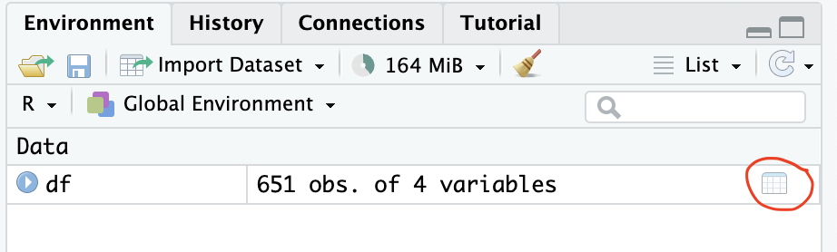

Module 6: Get to Know Your Data and Subsetting
![]()
Learning Objectives
After module 6, you should be able to…
- Use basic functions to get to know you data
- Use three indexing approaches
- Rely on indexing to extract part of an object (e.g., subset data) and to replace parts of an object (e.g., rename variables / columns)
- Describe what logical operators are and how to use them
- Use on the
subset()function to subset data
Getting to know our data
The dim(), nrow(), and ncol() functions are good options to check the dimensions of your data before moving forward.
Let’s first read in the data from the previous module.
Quick summary of data
The colnames(), str() and summary()functions from Base R are great functions to assess the data type and some summary statistics.
[1] "observation_id" "IgG_concentration" "age"
[4] "gender" "slum" 'data.frame': 651 obs. of 5 variables:
$ observation_id : int 5772 8095 9784 9338 6369 6885 6252 8913 7332 6941 ...
$ IgG_concentration: num 0.318 3.437 0.3 143.236 0.448 ...
$ age : int 2 4 4 4 1 4 4 NA 4 2 ...
$ gender : chr "Female" "Female" "Male" "Male" ...
$ slum : chr "Non slum" "Non slum" "Non slum" "Non slum" ... observation_id IgG_concentration age gender
Min. :5006 Min. : 0.0054 Min. : 1.000 Length:651
1st Qu.:6306 1st Qu.: 0.3000 1st Qu.: 3.000 Class :character
Median :7495 Median : 1.6658 Median : 6.000 Mode :character
Mean :7492 Mean : 87.3683 Mean : 6.606
3rd Qu.:8749 3rd Qu.:141.4405 3rd Qu.:10.000
Max. :9982 Max. :916.4179 Max. :15.000
NA's :10 NA's :9
slum
Length:651
Class :character
Mode :character
Note, if you have a very large dataset with 15+ variables, summary() is not so efficient.
Description of data
This is data based on a simulated pathogen X IgG antibody serological survey. The rows represent individuals. Variables include IgG concentrations in IU/mL, age in years, gender, and residence based on slum characterization. We will use this dataset for modules throughout the Workshop.
View the data as a whole dataframe
The View() function, one of the few Base R functions with a capital letter, and can be used to open a new tab in the Console and view the data as you would in excel.
View the data as a whole dataframe
You can also open a new tab of the data by clicking on the data icon beside the object in the Environment pane
You can also hold down Cmd or CTRL and click on the name of a data frame in your code.
Indexing
R contains several operators which allow access to individual elements or subsets through indexing. Indexing can be used both to extract part of an object and to replace parts of an object (or to add parts). There are three basic indexing operators: [, [[ and $.
Vectors and multi-dimensional objects
To index a vector, vector[i] select the ith element. To index a multi-dimensional objects such as a matrix, matrix[i, j] selects the element in row i and column j, where as in a three dimensional array[k, i, j] selects the element in matrix k, row i, and column j.
Let’s practice by first creating the same objects as we did in Module 1.
Here is a reminder of what these objects look like.
Finally, let’s use indexing to pull out elements of the objects.
List objects
For lists, one generally uses list[[p]] to select any single element p.
Let’s practice by creating the same list as we did in Module 1.
[[1]]
[1] 3
[[2]]
[1] "blue" "red" "yellow"
[[3]]
[,1] [,2]
[1,] 2 3
[2,] 4 5Now we use indexing to pull out the 3rd element in the list.
What happens if we use a single square bracket?
The [[ operator is called the “extract” operator and gives us the element from the list. The [ operator is called the “subset” operator and gives us a subset of the list, that is still a list.
$ for indexing for data frame
$ allows only a literal character string or a symbol as the index. For a data frame it extracts a variable.
Note, if you have spaces in your variable name, you will need to use back ticks ` after the $. This is a good reason to not create variables / column names with spaces.
$ for indexing with lists
$ allows only a literal character string or a symbol as the index. For a list it extracts a named element.
List elements can be named
list.object.named <- list(
emory = number.object,
uga = vector.object2,
gsu = matrix.object
)
list.object.named$emory
[1] 3
$uga
[1] "blue" "red" "yellow"
$gsu
[,1] [,2]
[1,] 2 3
[2,] 4 5If list elements are named, than you can reference data from list using $ or using double square brackets, [[
Using indexing to rename columns
As mentioned above, indexing can be used both to extract part of an object and to replace parts of an object (or to add parts).
[1] "observation_id" "IgG_concentration" "age"
[4] "gender" "slum" [1] "observation_id" "IgG_concentration_IU/mL"
[3] "age_year" "gender"
[5] "slum" For the sake of the module, I am going to reassign them back to the original variable names
Using indexing to subset by columns
We can also subset data frames and matrices (2-dimensional objects) using the bracket [ row , column ]. We can subset by columns and pull the x column using the index of the column or the column name. Leaving either row or column dimension blank means to select all of them.
For example, here I am pulling the 3rd column, which has the variable name age, for all of rows.
We can select multiple columns using multiple column names, again this is selecting these variables for all of the rows.
age gender
1 2 Female
2 4 Female
3 4 Male
4 4 Male
5 1 Male
6 4 Male
7 4 Female
8 NA Female
9 4 Male
10 2 Male
11 3 Male
12 15 Female
13 8 Male
14 12 Male
15 15 Male
16 9 Male
17 8 Male
18 7 Female
19 11 Female
20 10 Male
21 8 Male
22 11 Female
23 2 Male
24 2 Female
25 3 Female
26 5 Male
27 1 Male
28 3 Female
29 5 Female
30 5 Female
31 3 Male
32 1 Male
33 4 Female
34 3 Male
35 2 Female
36 11 Female
37 7 Male
38 8 Male
39 6 Male
40 6 Male
41 11 Female
42 10 Male
43 6 Female
44 12 Male
45 11 Male
46 10 Male
47 11 Male
48 13 Female
49 3 Female
50 4 Female
51 3 Male
52 1 Male
53 2 Female
54 2 Female
55 4 Male
56 2 Male
57 2 Male
58 3 Female
59 3 Female
60 4 Male
61 1 Female
62 13 Female
63 13 Female
64 6 Male
65 13 Male
66 5 Female
67 13 Female
68 14 Male
69 13 Male
70 8 Female
71 7 Male
72 6 Female
73 13 Male
74 3 Male
75 4 Male
76 2 Male
77 NA Male
78 5 Female
79 3 Male
80 3 Male
81 14 Male
82 11 Female
83 7 Female
84 7 Male
85 11 Female
86 9 Female
87 14 Male
88 13 Female
89 1 Male
90 1 Male
91 4 Male
92 1 Female
93 2 Male
94 3 Female
95 2 Male
96 1 Male
97 2 Male
98 2 Female
99 4 Female
100 5 Female
101 5 Male
102 6 Female
103 14 Female
104 14 Male
105 10 Male
106 6 Female
107 6 Male
108 8 Male
109 6 Female
110 12 Female
111 12 Male
112 14 Female
113 15 Male
114 12 Female
115 4 Female
116 4 Male
117 3 Female
118 NA Male
119 2 Female
120 3 Male
121 NA Female
122 3 Female
123 3 Male
124 2 Female
125 4 Female
126 10 Female
127 7 Female
128 11 Female
129 6 Female
130 11 Male
131 9 Male
132 6 Male
133 13 Female
134 10 Female
135 6 Female
136 11 Female
137 7 Male
138 6 Female
139 4 Female
140 4 Female
141 4 Male
142 4 Female
143 4 Male
144 4 Male
145 3 Male
146 4 Female
147 3 Male
148 3 Male
149 13 Female
150 7 Female
151 10 Male
152 6 Male
153 10 Female
154 12 Female
155 10 Male
156 10 Male
157 13 Male
158 13 Female
159 5 Female
160 3 Female
161 4 Male
162 1 Male
163 3 Female
164 4 Male
165 4 Male
166 1 Male
167 5 Female
168 6 Female
169 14 Female
170 6 Male
171 13 Female
172 9 Male
173 11 Male
174 10 Male
175 5 Female
176 14 Male
177 7 Male
178 10 Male
179 6 Male
180 5 Male
181 3 Female
182 4 Male
183 2 Female
184 3 Male
185 3 Female
186 2 Female
187 3 Male
188 5 Female
189 2 Male
190 3 Female
191 14 Female
192 9 Female
193 14 Female
194 9 Female
195 8 Female
196 7 Male
197 13 Male
198 8 Female
199 6 Male
200 12 Female
201 14 Female
202 15 Female
203 2 Female
204 4 Female
205 3 Male
206 3 Female
207 3 Male
208 4 Female
209 3 Male
210 14 Female
211 8 Male
212 7 Male
213 14 Female
214 13 Female
215 13 Female
216 7 Male
217 8 Female
218 10 Female
219 9 Male
220 9 Female
221 3 Female
222 4 Male
223 4 Female
224 4 Male
225 2 Female
226 1 Female
227 3 Female
228 2 Male
229 3 Male
230 5 Male
231 2 Female
232 2 Male
233 9 Male
234 13 Male
235 10 Female
236 6 Male
237 13 Female
238 11 Male
239 10 Male
240 8 Female
241 9 Female
242 10 Male
243 14 Male
244 1 Female
245 2 Male
246 3 Female
247 2 Male
248 3 Female
249 2 Female
250 3 Female
251 5 Female
252 10 Female
253 7 Male
254 13 Female
255 15 Male
256 11 Female
257 10 Female
258 3 Female
259 2 Male
260 3 Male
261 3 Female
262 3 Female
263 4 Male
264 3 Male
265 2 Male
266 4 Male
267 2 Female
268 8 Male
269 11 Male
270 6 Male
271 14 Female
272 14 Male
273 5 Female
274 5 Male
275 10 Female
276 13 Male
277 6 Male
278 5 Male
279 12 Male
280 2 Male
281 3 Female
282 1 Female
283 1 Male
284 1 Female
285 2 Female
286 5 Female
287 5 Male
288 4 Female
289 2 Male
290 NA Female
291 6 Female
292 8 Male
293 15 Male
294 11 Male
295 14 Male
296 6 Male
297 10 Female
298 12 Male
299 14 Male
300 10 Male
301 1 Female
302 3 Male
303 2 Male
304 3 Female
305 4 Male
306 3 Male
307 4 Female
308 4 Male
309 1 Female
310 7 Male
311 11 Female
312 7 Female
313 5 Female
314 10 Male
315 9 Female
316 13 Male
317 11 Female
318 13 Male
319 9 Female
320 15 Female
321 7 Female
322 4 Male
323 1 Male
324 1 Male
325 2 Female
326 2 Female
327 3 Male
328 2 Male
329 3 Male
330 4 Female
331 7 Female
332 11 Female
333 10 Female
334 5 Male
335 8 Male
336 15 Male
337 14 Male
338 2 Male
339 2 Female
340 2 Male
341 5 Male
342 4 Female
343 3 Male
344 5 Female
345 4 Female
346 2 Female
347 1 Female
348 7 Male
349 8 Female
350 NA Male
351 9 Male
352 8 Female
353 5 Male
354 14 Male
355 14 Male
356 7 Female
357 13 Female
358 2 Male
359 1 Female
360 1 Male
361 4 Female
362 3 Male
363 4 Female
364 3 Male
365 1 Male
366 5 Female
367 4 Female
368 4 Female
369 4 Male
370 11 Male
371 15 Female
372 12 Female
373 11 Female
374 8 Female
375 13 Male
376 10 Female
377 10 Female
378 15 Male
379 8 Female
380 14 Male
381 4 Male
382 1 Male
383 5 Female
384 2 Male
385 2 Female
386 4 Male
387 4 Male
388 2 Female
389 3 Male
390 11 Male
391 10 Female
392 6 Male
393 12 Female
394 10 Female
395 8 Male
396 8 Male
397 13 Male
398 10 Male
399 13 Female
400 10 Male
401 2 Male
402 4 Female
403 3 Female
404 2 Female
405 1 Female
406 3 Male
407 3 Female
408 4 Male
409 5 Female
410 5 Female
411 1 Female
412 11 Male
413 6 Male
414 14 Female
415 8 Male
416 8 Female
417 9 Female
418 7 Male
419 6 Male
420 12 Female
421 8 Male
422 11 Female
423 14 Male
424 3 Female
425 1 Female
426 5 Female
427 2 Female
428 3 Female
429 4 Female
430 2 Male
431 3 Female
432 4 Male
433 1 Female
434 7 Female
435 10 Male
436 11 Male
437 7 Female
438 10 Female
439 14 Female
440 7 Female
441 11 Male
442 12 Male
443 10 Female
444 6 Male
445 13 Male
446 8 Female
447 2 Male
448 3 Female
449 1 Female
450 2 Female
451 NA Male
452 NA Female
453 4 Male
454 4 Male
455 1 Male
456 2 Female
457 2 Male
458 12 Male
459 12 Female
460 8 Female
461 14 Female
462 13 Female
463 6 Male
464 11 Female
465 11 Male
466 10 Female
467 12 Male
468 14 Female
469 11 Female
470 1 Male
471 2 Female
472 3 Male
473 3 Female
474 5 Female
475 3 Male
476 1 Male
477 4 Female
478 4 Female
479 4 Male
480 2 Female
481 5 Female
482 7 Male
483 8 Male
484 10 Male
485 6 Female
486 7 Male
487 10 Female
488 6 Male
489 6 Female
490 15 Female
491 5 Male
492 3 Male
493 5 Male
494 3 Female
495 5 Male
496 5 Male
497 1 Female
498 1 Male
499 7 Female
500 14 Female
501 9 Male
502 10 Female
503 10 Female
504 11 Male
505 11 Female
506 12 Female
507 11 Female
508 12 Male
509 12 Male
510 10 Female
511 1 Male
512 2 Female
513 4 Male
514 2 Male
515 3 Male
516 3 Female
517 2 Male
518 4 Male
519 3 Male
520 1 Female
521 4 Male
522 12 Female
523 6 Male
524 7 Female
525 7 Male
526 13 Female
527 8 Female
528 7 Male
529 8 Female
530 8 Female
531 11 Female
532 14 Female
533 3 Male
534 2 Female
535 2 Male
536 3 Male
537 2 Male
538 2 Female
539 3 Female
540 2 Male
541 5 Male
542 10 Female
543 14 Male
544 9 Male
545 6 Male
546 7 Male
547 14 Female
548 7 Female
549 7 Male
550 9 Male
551 14 Male
552 10 Female
553 13 Female
554 5 Male
555 4 Female
556 4 Female
557 5 Female
558 4 Female
559 4 Male
560 4 Male
561 3 Female
562 1 Female
563 4 Male
564 1 Male
565 1 Female
566 7 Male
567 13 Female
568 10 Female
569 14 Male
570 12 Female
571 14 Male
572 8 Male
573 7 Male
574 11 Female
575 8 Male
576 12 Male
577 9 Female
578 5 Female
579 4 Male
580 3 Female
581 2 Male
582 2 Male
583 3 Male
584 4 Female
585 4 Male
586 4 Female
587 5 Male
588 3 Female
589 6 Female
590 3 Male
591 11 Female
592 11 Male
593 7 Male
594 8 Male
595 6 Female
596 10 Female
597 8 Female
598 8 Male
599 9 Female
600 8 Male
601 13 Male
602 11 Male
603 8 Female
604 2 Female
605 4 Male
606 2 Male
607 2 Female
608 4 Male
609 2 Male
610 4 Female
611 2 Female
612 4 Female
613 1 Female
614 4 Female
615 12 Female
616 7 Female
617 11 Male
618 6 Male
619 8 Male
620 14 Male
621 11 Male
622 7 Female
623 14 Female
624 6 Male
625 13 Female
626 13 Female
627 3 Male
628 1 Male
629 3 Male
630 1 Female
631 1 Female
632 2 Male
633 4 Male
634 4 Male
635 2 Female
636 4 Female
637 5 Male
638 3 Female
639 3 Male
640 6 Female
641 11 Female
642 9 Female
643 7 Female
644 8 Male
645 NA Female
646 8 Female
647 14 Female
648 10 Male
649 10 Male
650 11 Female
651 13 FemaleWe can remove select columns using indexing as well, OR by simply changing the column to NULL
We can also grab the age column using the $ operator, again this is selecting the variable for all of the rows.
Using indexing to subset by rows
We can use indexing to also subset by rows. For example, here we pull the 100th observation/row.
And, here we pull the age of the 100th observation/row.
Logical operators
Logical operators can be evaluated on object(s) in order to return a binary response of TRUE/FALSE
| operator | operator option | description |
|---|---|---|
< |
%l% | less than |
<= |
%le% | less than or equal to |
> |
%g% | greater than |
>= |
%ge% | greater than or equal to |
== |
equal to | |
!= |
not equal to | |
x&y |
x and y | |
x|y |
x or y | |
%in% |
match | |
%!in% |
do not match |
Logical operators examples
Let’s practice. First, here is a reminder of what the number.object contains.
Now, we will use logical operators to evaluate the object.
Using indexing and logical operators to rename columns
- We can assign the column names from data frame
dfto an objectcn, then we can modifycndirectly using indexing and logical operators, finally we reassign the column names,cn, back to the data framedf:
[1] "observation_id" "IgG_concentration" "age"
[4] "gender" "slum" [1] FALSE TRUE FALSE FALSE FALSEcn[cn=="IgG_concentration"] <-"IgG_concentration_mIU" #rename cn to "IgG_concentration_mIU" when cn is "IgG_concentration"
colnames(df) <- cn
colnames(df)[1] "observation_id" "IgG_concentration_mIU" "age"
[4] "gender" "slum" Note, I am resetting the column name back to the original name for the sake of the rest of the module.
Using indexing and logical operators to subset data
In this example, we subset by rows and pull only observations with an age of less than or equal to 10 and then saved the subset data to df_lt10. Note that the logical operators df$age<=10 is before the comma because I want to subset by rows (the first dimension).
Lets check that my subsets worked using the summary() function.
In the next example, we subset by rows and pull only observations with an age of less than or equal to 5 OR greater than 10.
Lets check that my subsets worked using the summary() function.
Missing values
Missing data need to be carefully described and dealt with in data analysis. Understanding the different types of missing data and how you can identify them, is the first step to data cleaning.
Types of “missing” values:
NA- Not Applicable general missing dataNaN- stands for “Not a Number”, happens when you do 0/0.Infand-Inf- Infinity, happens when you divide a positive number (or negative number) by 0.- blank space - sometimes when data is read it, there is a blank space left
- an empty string (e.g.,
"") NULL- undefined value that represents something that does not exist
Logical operators to help identify and missing data
| operator | description | |
|---|---|---|
is.na |
is NAN or NA | |
is.nan |
is NAN | |
!is.na |
is not NAN or NA | |
!is.nan |
is not NAN | |
is.infinite |
is infinite | |
any |
are any TRUE | |
all |
all are TRUE | |
which |
which are TRUE |
More logical operators examples
More logical operators examples
any(is.na(x)) means do we have any NA’s in the object x?
[1] TRUE[1] FALSEwhich(is.na(x)) means which of the elements in object x are NA’s?
subset() function
The Base R subset() function is a slightly easier way to select variables and observations.
Registered S3 method overwritten by 'printr':
method from
knit_print.data.frame rmarkdownSubsetting Vectors, Matrices and Data Frames
Description:
Return subsets of vectors, matrices or data frames which meet
conditions.Usage:
subset(x, ...)
## Default S3 method:
subset(x, subset, ...)
## S3 method for class 'matrix'
subset(x, subset, select, drop = FALSE, ...)
## S3 method for class 'data.frame'
subset(x, subset, select, drop = FALSE, ...)
Arguments:
x: object to be subsetted.subset: logical expression indicating elements or rows to keep: missing values are taken as false.
select: expression, indicating columns to select from a data frame.
drop: passed on to '[' indexing operator.
...: further arguments to be passed to or from other methods.Details:
This is a generic function, with methods supplied for matrices,
data frames and vectors (including lists). Packages and users can
add further methods.
For ordinary vectors, the result is simply 'x[subset &
!is.na(subset)]'.
For data frames, the 'subset' argument works on the rows. Note
that 'subset' will be evaluated in the data frame, so columns can
be referred to (by name) as variables in the expression (see the
examples).
The 'select' argument exists only for the methods for data frames
and matrices. It works by first replacing column names in the
selection expression with the corresponding column numbers in the
data frame and then using the resulting integer vector to index
the columns. This allows the use of the standard indexing
conventions so that for example ranges of columns can be specified
easily, or single columns can be dropped (see the examples).
The 'drop' argument is passed on to the indexing method for
matrices and data frames: note that the default for matrices is
different from that for indexing.
Factors may have empty levels after subsetting; unused levels are
not automatically removed. See 'droplevels' for a way to drop all
unused levels from a data frame.Value:
An object similar to 'x' contain just the selected elements (for a
vector), rows and columns (for a matrix or data frame), and so on.Warning:
This is a convenience function intended for use interactively.
For programming it is better to use the standard subsetting
functions like '[', and in particular the non-standard evaluation
of argument 'subset' can have unanticipated consequences.Author(s):
Peter Dalgaard and Brian RipleySee Also:
'[', 'transform' 'droplevels'Examples:
subset(airquality, Temp > 80, select = c(Ozone, Temp))
subset(airquality, Day == 1, select = -Temp)
subset(airquality, select = Ozone:Wind)
with(airquality, subset(Ozone, Temp > 80))
## sometimes requiring a logical 'subset' argument is a nuisance
nm <- rownames(state.x77)
start_with_M <- nm %in% grep("^M", nm, value = TRUE)
subset(state.x77, start_with_M, Illiteracy:Murder)
# but in recent versions of R this can simply be
subset(state.x77, grepl("^M", nm), Illiteracy:Murder)Subsetting use the subset() function
Here are a few examples using the subset() function
subset() function vs logical operators
subset() automatically removes NAs, which is a different behavior from doing logical operations on NAs.
| Min. | 1st Qu. | Median | Mean | 3rd Qu. | Max. | NA’s |
|---|---|---|---|---|---|---|
| 1 | 3 | 4 | 4.8 | 7 | 10 | 9 |
| Min. | 1st Qu. | Median | Mean | 3rd Qu. | Max. |
|---|---|---|---|---|---|
| 1 | 3 | 4 | 4.8 | 7 | 10 |
We can also see this by looking at the number or rows in each dataset.
Summary
colnames(),str()andsummary()functions from Base R are functions to assess the data type and some summary statistics- There are three basic indexing syntax:
[,[[and$ - Indexing can be used to extract part of an object (e.g., subset data) and to replace parts of an object (e.g., rename variables / columns)
- Logical operators can be evaluated on object(s) in order to return a binary response of TRUE/FALSE, and are useful for decision rules for indexing
- There are 7 “types” of missing values, the most common being “NA”
- Logical operators meant to determine missing values are very helpful for data cleaning
- The Base R
subset()function is a slightly easier way to select variables and observations.
Acknowledgements
These are the materials we looked through, modified, or extracted to complete this module’s lecture.
- “Introduction to R for Public Health Researchers” Johns Hopkins University
- “Indexing” CRAN Project
- “Logical operators” CRAN Project